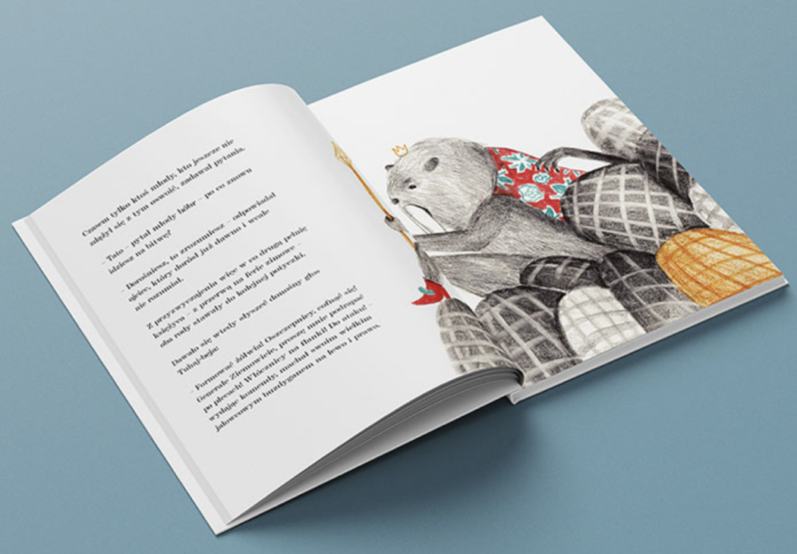
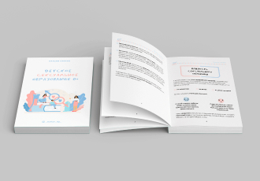
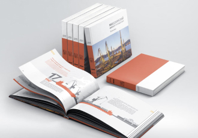
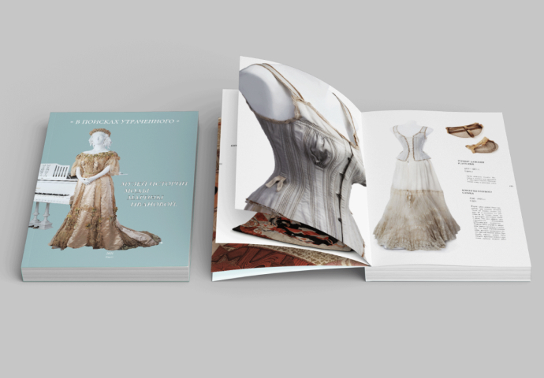
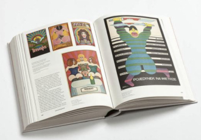
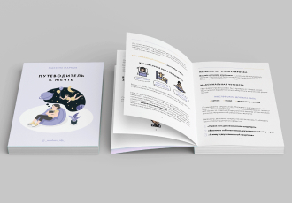

<div class="pageContent">
     <div class="portfolio_detail">
        <h1>Дизайн книги</h1>
        <div class="main_img">
            
        </div> 
        <div class="subject_block">
            <div class="left">
                <h2>Ціни на дизайн книги</h2>
                <div class="table">
                    <div><span>Створення</span></div>
                    <div><span>від 550грн</span></div>
                    <div><span>Корегування</span></div>
                    <div><span>від 350грн</span></div>

                </div>
                <div class="graph">
                    <h3>Відділ дизайну працює:</h3>
                    <p>Пн-Пт   09:00–21:00</p>
                    <p>Сб-Нд   10:00–19:00 </p>
                </div>

            </div>
            <div class="right">
                <button onclick="popup.show('consultationPopup')" type="button" class="main_btn no_bg with_hover black w210">хочу консультацію</button>
            </div>
        </div>

        <div class="images_content">
            <div class="field">
                <div class="big">
                    <div class="wrap">
                        
                    </div>
                </div>
                <div class="small">
                    <div class="wrap">
                        
                    </div>
                    <div class="wrap">
                        
                    </div>
                </div>
            </div>
        </div>
        <div class="images_content">
            <div class="field reverse">
                <div class="big">
                    <div class="wrap">
                        
                    </div>
                </div>
                <div class="small">
                    <div class="wrap">
                        
                    </div>
                    <div class="wrap">
                        
                    </div>
                </div>
            </div>
        </div>

        <div class="pagination">
            <ul>
                                                            <li class="active"><a class="dont-go" href="https://www.print24dev.redlab.sitejavascript:void(0)">1</a></li>
                                                <li><a class="dont-go" href="https://www.print24dev.redlab.site/ua/vydy-produkciyi/page-2">2</a></li>
                                                <li><a class="dont-go" href="https://www.print24dev.redlab.site/ua/vydy-produkciyi/page-3">3</a></li>
                                                <li><a class="dont-go" href="https://www.print24dev.redlab.site/ua/vydy-produkciyi/page-4">4</a></li>
                                                <li><a class="dont-go" href="https://www.print24dev.redlab.site/ua/vydy-produkciyi/page-5">5</a></li>
                                                        <li class="arrow right">
                        <a class="dont-go" href="https://www.print24dev.redlab.site/ua/vydy-produkciyi/page-2">
                            <svg width="5" height="8" viewBox="0 0 5 8" fill="none" xmlns="http://www.w3.org/2000/svg">
                                <path d="M1 7L4 4L1 1" stroke="black" stroke-width="1.11111" stroke-linecap="round" stroke-linejoin="round"></path>
                            </svg>
                        </a>
                    </li>
                        </ul>
        </div>
        <div class="loadMore">
            <a href="https://www.print24dev.redlab.sitejavascript:void(0);" class="main_btn withImage" onclick="loadMoreProducts()">
                <span>Завантажити ще</span>
                
            </a>
        </div>
        <div class="text_field">
            <div class="field">
                <h2>Дизайн книги</h2>
                <p>Важливим етапом створення книги є її оформлення. Дизайн книги - це процес художнього оформлення обкладинки
                    і внутрішнього наповнення. Він повинен правильно передавати зміст книги в більш короткій формі за допомогою художньої графіки, шрифту, ілюстрацій.</p>
                <h3>Чим відрізняється дизайн книги?</h3>
                <p>Дизайн книги визначається її тематикою, ідеєю. Він може бути більш простим, складним, яскравим, або менш помітним, м'яким або епатажним. Від дизайну обкладинки залежить презентабельність друкованого видання. Виділяють 5 основних прийомів зовнішнього оформлення книг:

                   <ul>
                       <li>Шрифт. Це не просто символи алфавіту, з його допомогою можна сформувати яскраву композицію. Шрифт буде повністю залежати від основної тематики книги. Стандартний формат здатний передати зміст, а незвичайний варіант вирішує більш складні завдання, звертаючи на себе всю увагу читача. Сучасний дизайнерський шрифт завдяки смисловим і асоціативним елементам розкриє всі його переваги і особливості. При цьому важливо зберегти між буквами ритмічний зв'язок, а також фактуру, колір, розміри.</li>
                        <li>Сюжетно-тематичне зображення. Зміст книги виражається через образи. Книжкові ілюстрації дизайну повинні бути пов'язані з конкретним епізодом.</li>
                    <li>Плетіння з допомогою орнаменту. Таке плетіння розміщується в основному на корінці, форзаці і виконує допоміжну роль. Зміст ґрунтується на смислових складових, які відомі читачеві.</li>
                    <li>Символічне зображення. Графіка, фотомонтаж, гравюра допоможуть донести ідею, виходячи зі змісту. Символи можуть бути динамічними або статичними. Важливо не переборщити, занадто складні зображення можуть залишитися незрозумілими.</li>
                </ul>
                   
                    У сукупності ці та інші складові дизайну утворюють цілісну декоративну композицію і взаємопов'язані зі змістом книги.</p>
                    <h3>Складові книжкової обкладинки</h3>
                    <p>Обкладинка - саме та частина, на яку потрібно звертати увагу в першу чергу. Це візуальний образ, який буде продавати. Правильно оформлена обкладинка збільшує впізнаваність, інтерес покупців, а значить і продажу. Важливо, щоб дизайн максимально відповідав змісту книги, а обкладинка не була надто яскравою або блідою, а оформлення сторінок залишало після себе приємне враження. Всі ці нюанси знають і візьмуть на себе дизайнери 24Print. Вони розроблять оригінальний макет дизайну книги, який точно сподобається читачеві. Обкладинки для книг на замовлення повинні містити такі елементи:

                        <ul>
                            <li>Зрозумілий заголовок і підзаголовок.</li>
                            <li>Ключовий елемент, який приверне увагу.</li>
                            <li>Яскраво виражена композиція з деталями, які не будуть відволікати.</li>
                            <li>Привабливі візуальні елементи дизайну.</li>
                            <li>Ефективне використання вільного простору</li>
                        </ul>
                        
                        
                        Дизайн обкладинки книги, ціна якої буде залежати від складності розробки макета, може включати різні елементи. Обов'язковими складовими дизайну обкладинки є: ім'я автора, заголовок і підзаголовки, фонові зображення і графіка, 
                        а також короткі анотації відгуків, якщо вони відповідають дизайну книги. Якщо обкладинка створюється для друкованої книги, не варто забувати про корінець, який повинен бути помітним. Для цього можна використовувати всі переваги привабливого шрифту. При виборі відповідного зображення для оформлення обкладинки книги потрібно відштовхуватися від її сюжету, визначеної сцени, яку можна створити за допомогою ілюстрацій.</p>
                        <h3>Етапи оформлення дизайну книги</h3>
                        <p>Важливий момент в розробці макету книги - визначення цільової аудиторії, для якої буде призначена друкована продукція. Важливо розібратися кому буде цікава книга і як на ній акцентувати увагу. Також варто визначитися з такими важливими параметрами, як шрифт, колір, тип ілюстрації, оформлення обкладинки. Деякі обкладинки більше подобаються, а інші відштовхують, тому важливо розібратися в причинах, чому так відбувається. Після аналізу можна приступити до роботи над дизайном. Можна виділити три основні етапи у створенні дизайну книги:
                            <ul>
                                <li>Підготовка основного макета дизайну - найскладніший і копіткий етап. Ключове увага приділяється стилю, шрифту, квітам, зображенням. Варто продумати розміри книги і її точну структуру. У графічному редакторі обирається модель CMYK, вона необхідна для якісного друку.</li>
                                <li>Верстка - це процес компонування всіх сторінок, а також розворотів, заголовків, зображень, в єдине ціле. Наповнення текстом, дизайн повністю повинен відповідати макету. Для верстки призначені спеціальні програми, наприклад, такі, як Adobe InDesign. Всі складові дизайну повинні виглядати як єдине ціле.</li>
                                <li>Дизайн зовнішньої частини оформлення обкладинки, розділів для всіх глав, титулок, ілюстрацій, форзаців, а також розворотів.</li>
                            </ul>

                            Дизайн книги повністю повинен відповідати її тематиці. Для технічних книг найголовніше - підібрати правильний шрифт, при цьому ілюстрації можуть зовсім бути відсутнім. Щоб оформити книгу для дитини, потрібно якомога ретельніше попрацювати над зображеннями і яскравими квітами.</p>
                            <h3>Де замовити дизайн книги?</h3>
                            <p>Дизайн книги буде індивідуальним, це абсолютно творчий процес, який вимагає уважності, креативу, досвіду. Крім візуальної складової він повинен відповідати певним критеріям друкарні, щоб готовий варіант ідеально виглядав у пресі. Дизайн книги для недизайнерів розробити самостійно досить складно, потрібен креативний підхід і всебічний аналіз, тому краще звернутися до фахівців.

                                Оперативно замовити дизайн обкладинки для книги можна в компанії 24Print. Дизайнери ще до початку роботи над книгою знайомляться з її змістом. Це допоможе вибрати стилістику, формат, ілюстрації для книги. Ми допоможемо зменшити вартість робіт, дизайну, при цьому якість книги завжди буде на високому рівні. Крім стильного зовнішнього вигляду, дизайн повинен полегшити читання і не заважати йому. Варто знайти компроміс між творчим підходом і практичністю.</p>
            </div>
            <button data-toggle-text="true" class="toggle_text" type="button"><span class="more">разгорнути </span><span class="less">згорнути</span>
                <svg width="8" height="5" viewBox="0 0 8 5" fill="none" xmlns="http://www.w3.org/2000/svg">
                    <path d="M4.76837e-07 0.713058C4.76837e-07 0.64433 0.0320649 0.56701 0.0801606 0.515464L0.480963 0.0859103C0.529058 0.0343641 0.601203 0 0.665331 0C0.729459 0 0.801603 0.0343641 0.8497 0.0859103L4 3.4622L7.1503 0.0859103C7.1984 0.0343641 7.27054 0 7.33467 0C7.40681 0 7.47094 0.0343641 7.51904 0.0859103L7.91984 0.515464C7.96794 0.56701 8 0.64433 8 0.713058C8 0.781787 7.96794 0.859106 7.91984 0.910653L4.18437 4.91409C4.13627 4.96564 4.06413 5 4 5C3.93587 5 3.86373 4.96564 3.81563 4.91409L0.0801606 0.910653C0.0320649 0.859106 4.76837e-07 0.781787 4.76837e-07 0.713058Z" fill="black"/>
                    </svg>
                    
            </button>
        </div>
     </div>
</div>